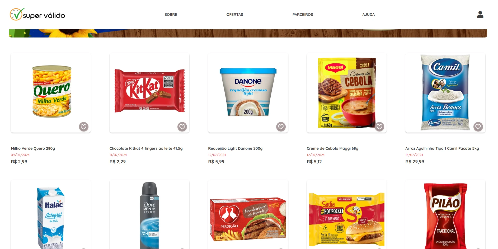
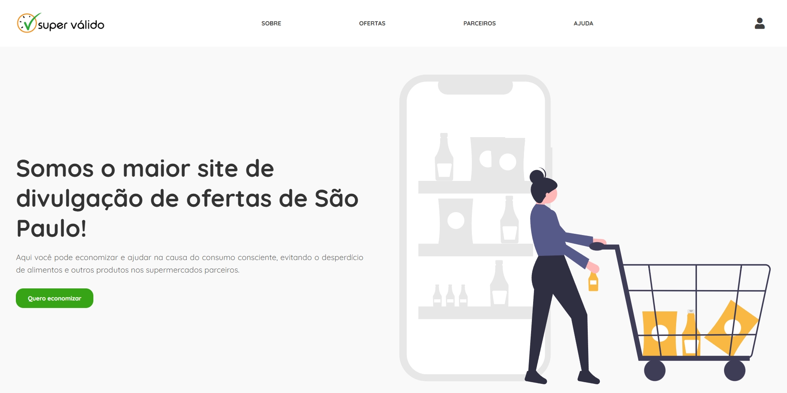
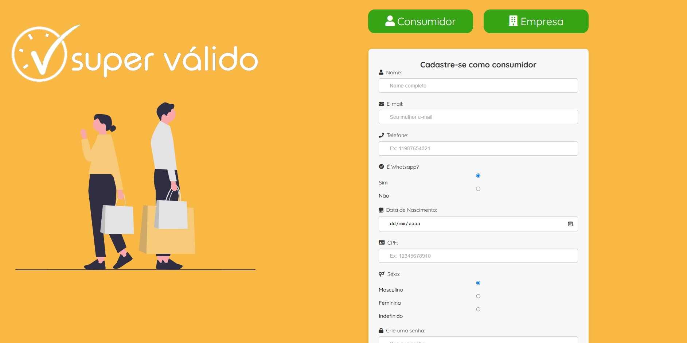
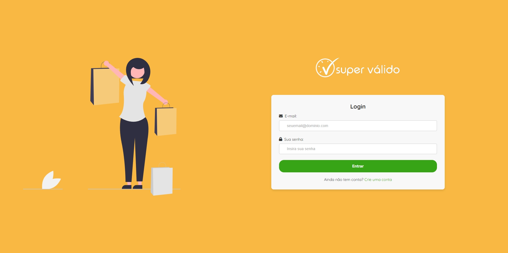
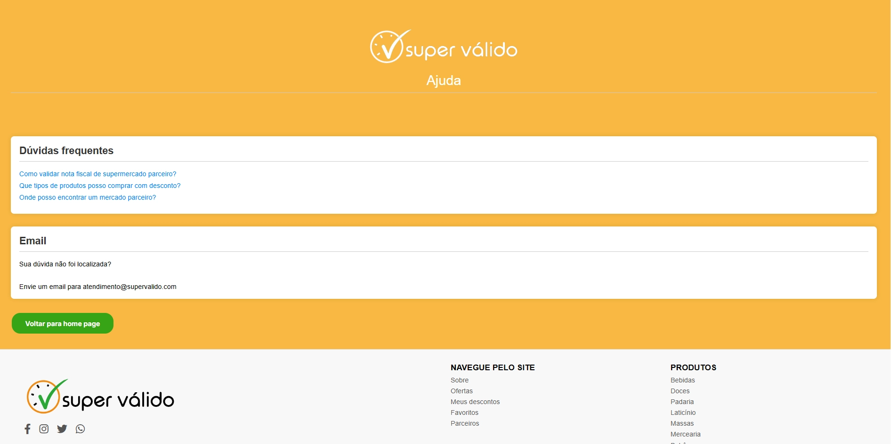

Protótipo web · Consumo consciente
Super Válido
Ofertas de alimentos próximos ao vencimento para aproximar supermercados e consumidores.

O projeto
O Super Válido nasceu da proposta de reduzir o desperdício de alimentos e facilitar o acesso a ofertas. O protótipo apresenta produtos próximos ao vencimento e os caminhos de navegação para consumidores e estabelecimentos.
Proposta e estrutura
A entrega do primeiro semestre foi um protótipo estático em HTML, CSS e JavaScript. As telas representam catálogo, cadastro, login e informações sobre a proposta; a integração com estoques e a persistência em banco ficaram como possibilidades de evolução.
Planejamento técnico & organização
Minha participação
- Apoiei o planejamento da lógica e dos fluxos da solução, com interesse na futura estrutura de backend e de dados.
- Participei da organização do trabalho e do alinhamento das tarefas da equipe.
Organização do projeto
Foi meu primeiro contato com a organização de um projeto em equipe na graduação. A estruturação mais formal de backlog e sprints veio nos projetos seguintes.
O que essa experiência acrescentou
Esse projeto marcou o início do meu interesse por backend e bancos de dados, ainda no contexto de uma proposta sem servidor ou banco implementados.
Tecnologias
Na minha atuação
Planejamento técnico, definição de fluxos e organização da equipe, em um protótipo HTML/CSS/JavaScript.
No projeto completo
O projeto em telas
Registros da aplicação desenvolvida pela equipe. As imagens mostram o produto completo; minha contribuição está descrita na seção acima.










Explore o projeto
Repositórios da organização TheLovelace com os arquivos e a documentação do projeto.